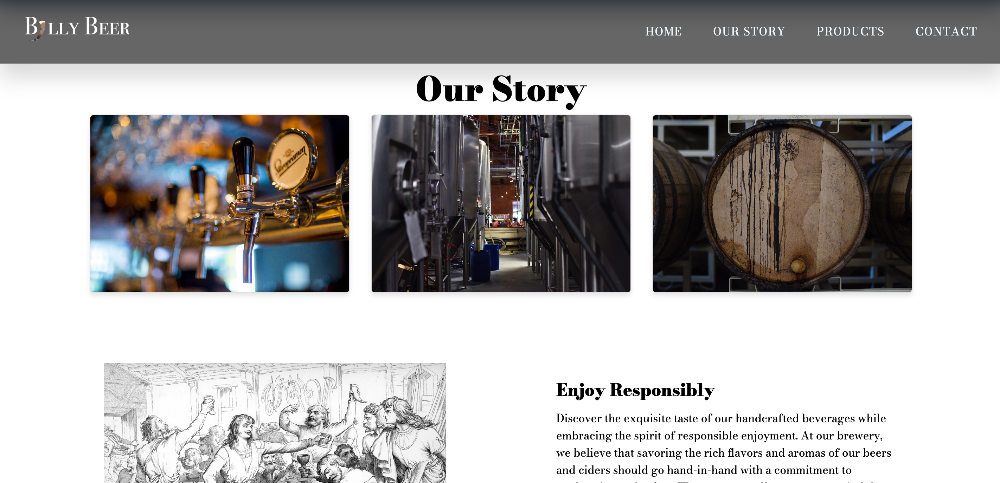
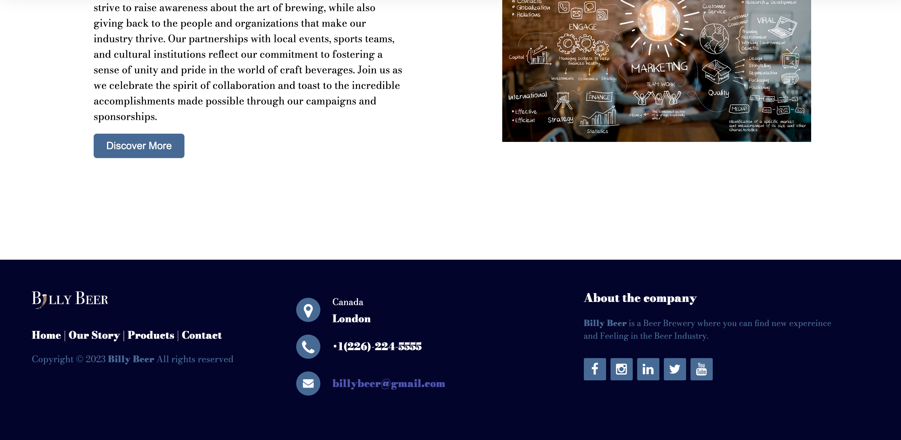
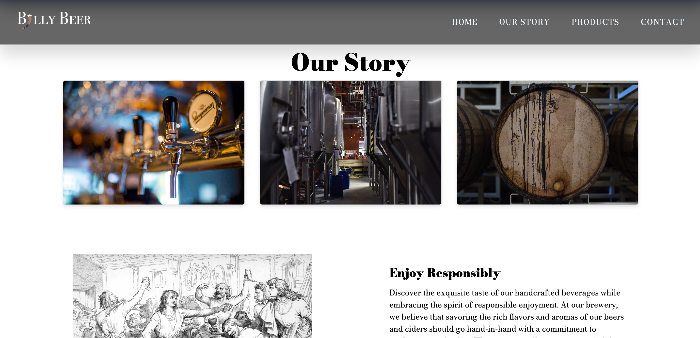
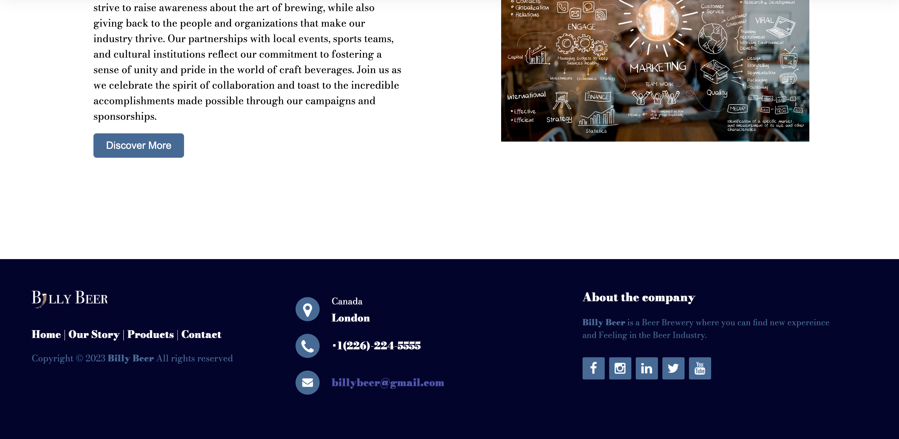

For this website, my partner and I were tasked with designing and building a brand refresh for an existing beverage company. A new logo, bottle, website, and overall brand theme were to be created.
To start off, we decided to make the new brand theme for Billy Beer be vikings. Whenever I think about vikings, beer is one of the things I always associate to them as there are so many different pieces of media depicting vikings drinking out of large mugs or even the horns from their helmets. Because of that, when designing the logo, I wanted to incorporate the imagery of a horn filled with beer. I began with a relatively simple font with a non-modern look and chose to replace the letter “I” in “Billy” with the horn. For the bottle, I chose a blue glass colour to represent the ocean that the vikings are famous for travelling. For the bottle’s label, I made it a transparent shape with lifework to form The shape and designs of the label itself. This was inspired by Heinekens bottle. My partner was the developer for this website so he was in charge of a large majority of the code work done to build the website. For my website design, I wanted to make a simple site layout that would clearly convey the history of our beer and why it should be the next beer the person visiting the site purchases.
Adobe Illustrator, Adobe XD, Adobe Photoshop, Adobe inDesign, Adobe After Effects, HTML5, CSS3, Javascript, Cinema 4D
 


